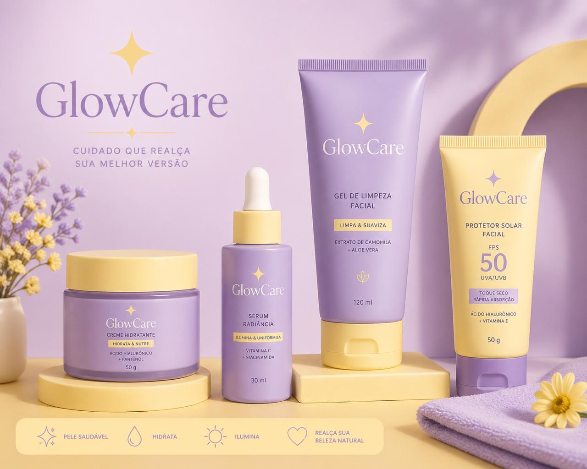

Dicas Para Você!
Descubra dicas e cuidados para manter sua pele radiante e saudável e com um Glow que você nem imaginaria!.
Tipos de pele
Qual é o seu tipo de pele? Clique no tipo de pele para descobrir os cuidados específicos para cada um deles!
Dicas Extras
Além dos cuidados básicos, aqui estão algumas dicas extras para manter sua pele saudável e radiante:
- Evite o uso excessivo de produtos agressivos, como esfoliantes fortes, que podem irritar a pele.
- Use protetor solar diariamente, mesmo em dias nublados, para proteger sua pele dos danos causados pelos raios UV.
- Mantenha uma dieta equilibrada, rica em frutas, vegetais e água, para nutrir sua pele de dentro para fora.
- Evite fumar e limitar o consumo de álcool, pois ambos podem prejudicar a saúde da pele.
- Durma o suficiente para permitir que sua pele se recupere e se regenere durante a noite.
Quiz rápido de pele
Responda 3 perguntas para receber uma sugestão simples de cuidado para sua pele.